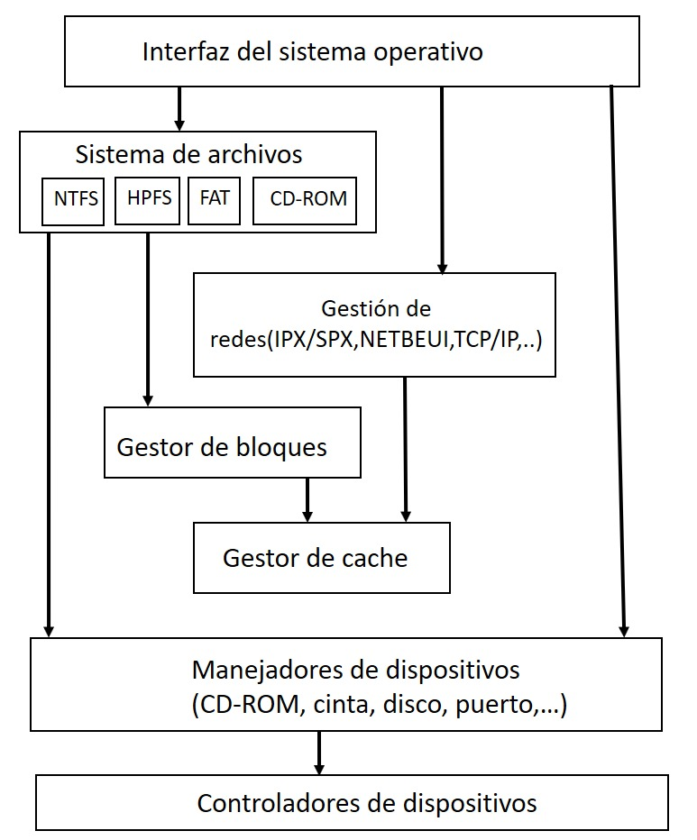
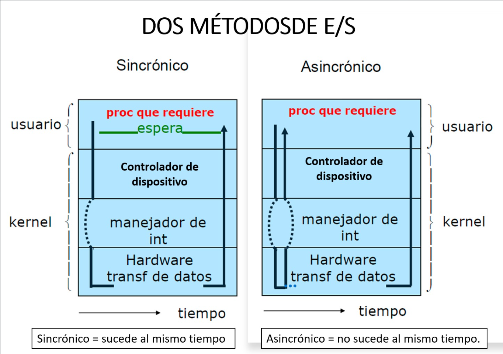

Los sistemas operativos para las mainframes están profundamente orientados hacia el procesamiento
de muchos trabajos a la vez, de los cuales la mayor parte requiere muchas operaciones de E/S. Por lo general ofrecen tres tipos de servicios: procesamiento por lotes, procesamiento de transacciones y tiempo compartido.
Aunado a ello existen características como son:
- Administración de tareas:
-
Monotarea: Son aquellos sistemas operativos capaces de manejar programas o realizar tareas una sola vez a la vez.
-
Multitarea: Son aquellos sistemas operativos que permiten ejecutar varios procesos a la vez desde uno de la computadora, esto quiere decir que varios usuarios pueden realizar tareas desde sus computadoras y puede ser en forma de acceso remoto o en servicios de red en donde estén conectadas las máquinas.
- Administración de usuarios:
-
Monousuario: este sistema solo trabaja con un usuario a la vez, por lo que cualquier usuario tiene acceso a sus datos del sistema debido a que solo está en su computadora y el es único que puede realizar en su propia máquina.
-
Multiusuario: En este sistema operativo varios usuarios pueden trabajar a la misma vez, ya sea en servicios o en almacenamiento de información debido a que trabajan en red y pueden compartir memoria, programas, procesador, impresoras, scanner entre otros.
Existen también sistemas operativos por lotes estos funcionan y procesan una gran cantidad de trabajos con poca o ninguna comunicación con los usuarios y los programas en ejecución.
Cuando los sistemas son bien planeados se puede establecer un tiempo de ejecución ya que los recursos como el procesador son mejor utilizados y los sistemas operativos son simples debido a la secuencia de la ejecución de los trabajos y sus procesos.
- Sistemas operativos en tiempo real: Conocidos como RTOS. Son aquellos en los cuales no tiene importancia el usuario sino los procesos que se lleven a cabo, estos se utilizan en entornos donde existe una gran necesidad sucesos o eventos por ello estos sistemas operativos en tiempo real son construidos para aplicaciones específicas como puede ser un control de tráfico aéreo, bolsa de valores, control de refinerías, por lo que las aplicaciones que se pueden realizar en tiempo real son las siguientes:
-
Control de trenes.
-
Telecomunicaciones.
-
Sistemas de fabricación integrada.
-
Producción y distribución de energía eléctrica.
-
Control de edificios.
-
Sistemas multimedia.
Algunos ejemplos de estos sistemas operativos como son: Solaris, Lyns y Spectra.
-
Existen también sistemas operativos distribuidos que son aquellos que permiten distribuir trabajos, tareas o procesos entre un conjunto de procesadores, por lo que en este caso para el usuario es transparente este funcionamiento, para ello existen dos esquemas:
-
Un sistema fuertemente acoplado que es aquel que comparte memoria y un reloj global, en donde sus tiempos de acceso son similares para todos los procesadores.
-
Sistema débilmente acoplado en este caso los procesadores no comparten memoria ni reloj, ya que cada uno de ellos cuenta con su memoria local y sus recursos propios.
No todos los sistemas operativos de tiempo real son embebidos ni todos los sistemas operativos embebidos son de tiempo real, como lo muestra la siguiente imagen:
Ahora bien las operaciones de entrada y salida son importantes por lo que los procesos de usuario emiten peticiones de entrada/salida al sistema operativo. Cuando un proceso solicita una operación de E/S, el sistema operativo prepara dicha operación y bloquea al proceso hasta que se recibe una interrupción del controlador del dispositivo indicando que la operación está completa.
Las peticiones se procesan de forma estructurada en las siguientes capas:
- Manejadores de interrupción.
- Manejadores de dispositivos o drivers.
Software de Entrada y salida independiente de los dispositivos. Este software está formado por la parte de alto nivel de los manejadores, el gestor de caché, el gestor de bloques y el servidor de archivos Interfaz del sistema operativo. Llamadas al sistema que usan las aplicaciones de usuario, como se muestra en la siguiente imagen

La forma más sencilla de solicitar una operación de entrada y salida implica que cuando la operación haya realizado la petición, bloqueará el proceso o hilo que la realizó hasta que la operación termine, con lo que ya no requerirá hacer ninguna implementación adicional para seguir utilizando el dispositivo de entrada y salida para la siguiente operación, sea de lectura o de escritura
Existen dos métodos de entrada y salida:
-
Síncrono: Es cuando la invocación de una operación en un dispositivo de entrada y salida que bloquea al solicitante mientras realiza la operación, debido a que coordina la interacción del proceso que solicita con las operaciones.
-
Asíncrono: Es cuando el proceso de inicio la entrada y salida y continúa su ejecución en donde el proceso es notificado al sistema operativo cuando este es concluido en su entrada y salida totalmente
Como se muestra en la siguiente imagen
El síncrono es cuando la invocación de una operación en un dispositivo de entrada y salida que bloquea al solicitante mientras realiza la operación, debido a que coordina la interacción del proceso que solicita con las operaciones.



 Ícono por
Ícono por